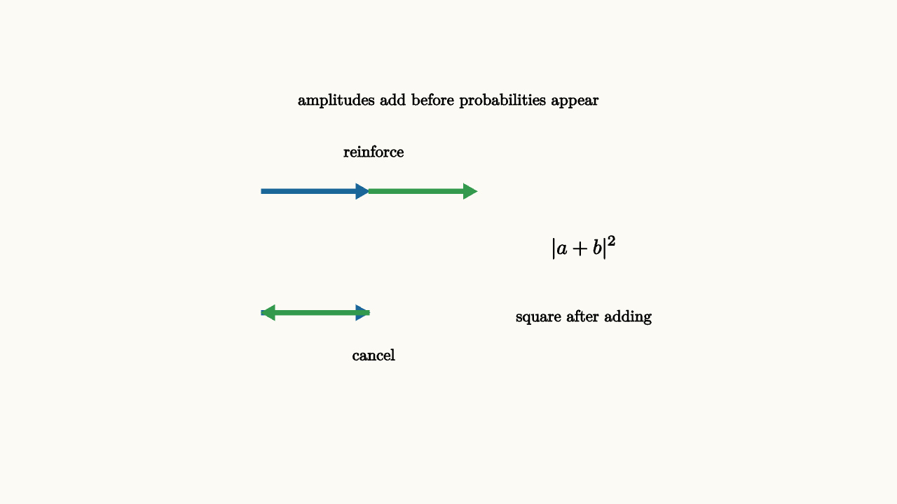

Probabilities add in ordinary random processes. If two disjoint ways lead to the same outcome, their probabilities combine. Quantum mechanics asks us to add amplitudes first, then square. That single change explains bright and dark bands in a double-slit experiment, and it also explains why gates can compute.
Suppose two paths lead to an outcome. One path contributes amplitude $a$, the other contributes amplitude $b$. The probability of the outcome is
If the amplitudes point in the same complex direction, they reinforce. If they point in opposite directions, they cancel. A quantum algorithm is a carefully designed interference machine.

source
background = [0.985, 0.98, 0.955, 1]
camera = Camera(4.8b)
mesh arrows = block {
. color{BLUE} Arrow(start: [-2.0, 0.65, 0], end: [-0.85, 0.65, 0])
. color{GREEN} Arrow(start: [-0.85, 0.65, 0], end: [0.3, 0.65, 0])
. center{[-0.8, 1.08, 0]} Text("reinforce", 0.62)
. color{BLUE} Arrow(start: [-2.0, -0.65, 0], end: [-0.85, -0.65, 0])
. color{GREEN} Arrow(start: [-0.85, -0.65, 0], end: [-2.0, -0.65, 0])
. center{[-0.8, -1.1, 0]} Text("cancel", 0.62)
. center{[1.45, 0.05, 0]} Tex("|a+b|^2", 0.8)
. center{[0, 1.62, 0]} Text("amplitudes add before probabilities appear", 0.62)
. center{[1.45, -0.7, 0]} Text("square after adding", 0.62)
}
"amplitude addition"
play Fade(0.7)The double-slit experiment is the standard physical image. A particle's amplitude reaches a screen through two slits. At some points, the two contributions arrive in phase and make bright bands. At other points, they arrive out of phase and make dark bands. The dark bands are powerful evidence that amplitudes are being combined before probabilities enter the story.
A quantum circuit is a controllable version of that idea. The "paths" are basis-state branches created by gates. Phase gates shift some branches. Later gates bring branches back together. The final measurement sees the result of all those vector additions.
Gates arrange interference
The Hadamard gate is the simplest interference tool for one qubit:
Apply $H$ to $|0\rangle$, then apply $H$ again:
The $|1\rangle$ pieces cancel. The $|0\rangle$ pieces reinforce. A pair of gates that seems to create randomness and then remove it is really moving amplitudes through an interference pattern.
Put a $Z$ gate between those two Hadamards and the outcome changes:
The middle gate only changed a sign in the superposition basis. The final Hadamard converted that sign into a measured bit flip. This three-gate circuit is small enough to calculate by hand, and it contains the main move used by larger quantum algorithms: store a property in phase, then interfere branches so phase becomes visible.
source
param phase = 0.0
background = [0.985, 0.98, 0.955, 1]
camera = Camera(4.8b)
let Interference = |phase| block {
. center{[-1.9, 0.9, 0]} Text("path A", 0.62)
. center{[-1.9, -0.9, 0]} Text("path B", 0.62)
. color{BLUE} Arrow(start: [-1.25, 0.75, 0], end: [0.15, 0.25, 0])
. color{GREEN} Arrow(start: [-1.25, -0.75, 0], end: [0.15 - 0.9 * phase, -0.25 + 0.5 * phase, 0])
. fill{alpha{0.16} ORANGE} stroke{ORANGE, 3} center{[1.3, 0, 0]} Rect([1.2, 0.65])
. center{[1.3, 0, 0]} Text("outcome", 0.62)
. center{[0, 1.55, 0]} Text("change a relative phase, change the result", 0.62)
. center{[0, -1.5, 0]} Tex("P = |a + e^{i\\phi}b|^2", 0.62)
}
"aligned paths"
mesh scene = Interference(phase: $phase)
play Fade(0.6)
"shift one path"
phase = 1.0
scene = Interference(phase: $phase)
play Lerp(1.2)
"circuit view"
scene = block {
. center{[0, 1.45, 0]} Text("phase becomes a bit after recombination", 0.62)
. stroke{BLACK, 3} Line(start: [-2.2, 0.1, 0], end: [2.2, 0.1, 0])
. fill{alpha{0.16} GREEN} stroke{GREEN, 3} center{[-1.15, 0.1, 0]} Rect([0.5, 0.44])
. center{[-1.15, 0.1, 0]} Text("H", 0.62)
. fill{alpha{0.16} ORANGE} stroke{ORANGE, 3} center{[0, 0.1, 0]} Rect([0.5, 0.44])
. center{[0, 0.1, 0]} Text("Z", 0.62)
. fill{alpha{0.16} GREEN} stroke{GREEN, 3} center{[1.15, 0.1, 0]} Rect([0.5, 0.44])
. center{[1.15, 0.1, 0]} Text("H", 0.62)
. center{[0, -1.05, 0]} Tex("HZH|0\\rangle=|1\\rangle", 0.68)
}
play Trans(1.0)The word "explores" needs care. A quantum computer gives us no permission to read every branch of a superposition. Measurement gives one sample. The advantage comes when the algorithm uses interference to make that one sample informative. Branches that encode unhelpful answers should cancel. Branches that encode the desired structure should reinforce.
Grover search is a good mental picture. The marked item receives a phase flip. Then an inversion-about-the-average step reflects amplitudes so the marked amplitude grows. Repeating the pair turns a hidden sign into a large measurement probability. Period-finding algorithms use the same broad idea with Fourier phases rather than a geometric average.
A small warning helps keep the intuition honest. Interference can make one answer likely only when the problem has structure for the circuit to exploit. Randomly chosen phases usually make a mess. Quantum algorithms succeed when the phase pattern is tied to a promise, a symmetry, a period, or an oracle property. The circuit is a translator from that structure into constructive interference.
The lesson to keep
Quantum computing is powered by amplitude arithmetic. The computer combines complex contributions so signs and phases matter. The design problem is to choose gates that make wrong answers interfere destructively and useful answers interfere constructively. Interference is the moment when hidden phase becomes visible probability.